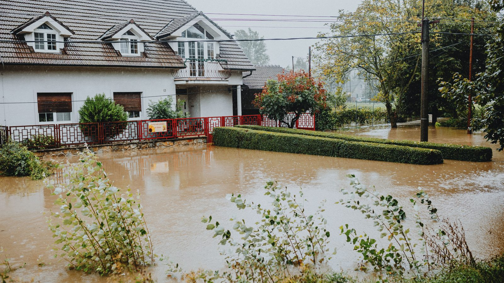

Santa Catarina · Clima
Santa Catarina · ClimaChuva com granizo atinge 23 cidades de Santa Catarina, e cinco decretam situação de emergência
O balanço do estado em que Porto Belo aparece, com o estrago cidade por cidade.
O convite é para morador, associação de bairro e liderança comunitária. A Prefeitura diz que quer ampliar a participação da sociedade na construção das políticas de prevenção. A reunião é no plenário da Câmara, na Rua Capitão Gualberto Leal Nunes.
Em 30 segundos · Modo de Leitura, formato original Santa Informa
Porto Belo vai apresentar o Plano Municipal de Redução de Riscos, o PMRR.
A reunião é na quinta-feira, 10 de setembro, às 18h.
O lugar é a Câmara de Vereadores, na Rua Capitão Gualberto Leal Nunes, nº 330.
Quem organiza é a Defesa Civil do município.
O encontro é aberto: morador, associação de bairro e liderança comunitária podem ir.
A Prefeitura diz que quer ampliar a participação da sociedade nas políticas de prevenção.
O convite saiu na sexta-feira, 28 de agosto.
Dois dias depois, Porto Belo entrou na lista de municípios catarinenses com alagamento no temporal.
A cidade é a única do Litoral Norte no balanço de danos do Governo do Estado.
O aviso de temporal segue até a madrugada de terça-feira.
Poder PúblicoPublicada em Redação Santa Informa

A Prefeitura de Porto Belo marcou para 10 de setembro a apresentação pública do Plano Municipal de Redução de Riscos, o PMRR. O encontro é numa quinta-feira, começa às 18h e acontece no plenário da Câmara de Vereadores, na Rua Capitão Gualberto Leal Nunes, nº 330. Quem organiza é a Defesa Civil do município. O convite saiu pela Prefeitura na sexta-feira, 28 de agosto.
O plano é o documento que organiza o que o município sabe sobre os próprios riscos e o que pretende fazer antes de o problema virar ocorrência. Segundo a Prefeitura, o objetivo do encontro é "apresentar à comunidade o plano e ampliar a participação da sociedade na construção de políticas públicas voltadas à prevenção, preparação e redução de riscos e desastres no município". É o tipo de assunto que costuma andar sem plateia e aparecer só depois da enxurrada.
A reunião é aberta. O convite alcança a população em geral, entidades da sociedade civil, representantes de associações, lideranças comunitárias e qualquer pessoa interessada no assunto. "A participação da comunidade é fundamental para fortalecer as estratégias de prevenção e tornar o município cada vez mais preparado para enfrentar situações de risco", diz a Prefeitura no comunicado. Na prática, quem mora em rua que alaga ou em pé de morro é quem tem a informação mais útil para colocar no mapa.
A data escolhida ganhou peso no mesmo fim de semana em que foi divulgada. Neste domingo, 30, o Governo de Santa Catarina informou que 23 municípios do estado registraram danos por causa do temporal com granizo e vendaval. Porto Belo está na lista, e é a única cidade do Litoral Norte que aparece nela: segundo o Estado, a chuva intensa com ventos fortes provocou alagamentos pontuais em vias públicas no município. O aviso da Defesa Civil estadual vale até a madrugada de terça-feira, 1º de setembro, com previsão de 50 a 90 milímetros para o Litoral Norte.
Não é a primeira frente de prevenção que Porto Belo abre neste mês. Na semana passada a Prefeitura começou o programa Limpa Fios, para retirar cabo solto e sem uso dos postes da cidade, um problema que vira risco justamente em dia de vendaval. Agora entra o plano de risco, que é a peça mais ampla, porque olha para encosta, drenagem e ocupação, e não só para o poste.
O resumo de 30 segundos está no topo e a versão completa é o texto acima. Aqui ficam as três leituras da casa sobre o mesmo assunto.
Clara, a otimista
Reunião pública sobre risco é daquelas coisas que ninguém comenta no grupo da família e que mudam a vida do bairro. O município está chamando morador para dizer onde a água sobe, onde o barranco escorrega e onde o bueiro entope. Quem mora na rua sabe disso melhor que qualquer mapa.
E a data ajuda. Chamar a comunidade dez dias depois de um fim de semana de temporal é aproveitar o momento em que todo mundo ainda lembra do que viu pela janela. Memória fresca rende reunião melhor.
Seu Prudêncio, o criterioso
Merece atenção o que o comunicado não diz. Não há número de áreas de risco mapeadas, não há custo, não há prazo. Plano de redução de risco sem cronograma e sem fonte de recurso corre o risco de virar diagnóstico bonito na estante.
Vale acompanhar também o formato. Quinta-feira, 18h, na Câmara, é horário que pega parte de quem trabalha em turno e deixa de fora quem sai às 18h30 do serviço. Uma sugestão útil: publicar o documento antes do dia 10 e abrir um prazo para receber contribuição por escrito depois da reunião. Custa pouco e amplia bastante quem consegue participar de verdade.
Dito isso, é justo reconhecer o mérito da iniciativa. Município pequeno costuma tratar risco só no dia da ocorrência, quando o telefone toca. Fazer plano, apresentar em público e convidar associação de bairro é o caminho certo, e Porto Belo está fazendo isso antes do verão, que é quando a chuva forte volta com tudo.
Caco, o sarcástico
A Prefeitura marcou a apresentação do plano de redução de riscos e, no fim de semana seguinte, a cidade alagou. Chamam isso de estudo de caso ao vivo.
Reunião sobre enchente numa quinta-feira às 18h. Se chover, metade da plateia vai testar o plano no caminho de casa.
E confesso um alívio: pelo menos desta vez o poder público está falando de risco antes do desastre, e não naquele tom de quem descobriu o buraco depois que o carro caiu dentro.
Fontes: Prefeitura de Porto Belo, comunicado publicado em 28 de agosto de 2026, de onde saem a data, o horário, o endereço da Câmara de Vereadores, o público convidado, o objetivo da reunião e as duas citações. O Governo de Santa Catarina, em texto de 30 de agosto de 2026, às 10h54, de onde saem os 23 municípios com danos e o registro de alagamento em via pública em Porto Belo. E a Defesa Civil de Santa Catarina, no aviso nº 153/2026, de onde saem a validade até 1º de setembro e a faixa de 50 a 90 milímetros. A imagem do topo é ilustrativa, de banco gratuito, e não mostra Porto Belo.
Santa Catarina · ClimaO balanço do estado em que Porto Belo aparece, com o estrago cidade por cidade.
 Porto Belo · Infraestrutura
Porto Belo · InfraestruturaOutra frente da Prefeitura para reduzir risco na rua.
 Porto Belo · Segurança
Porto Belo · SegurançaO balanço mais recente do que a cidade atende na rua.